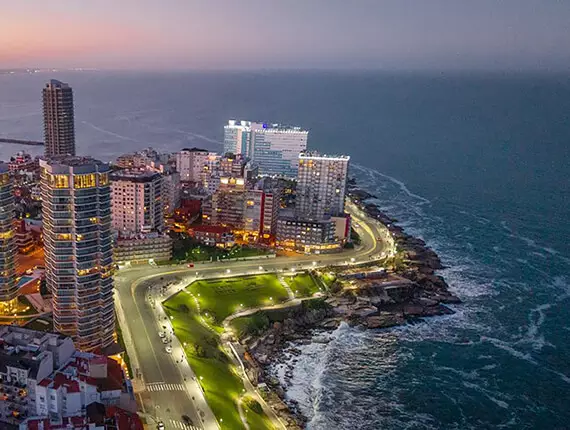
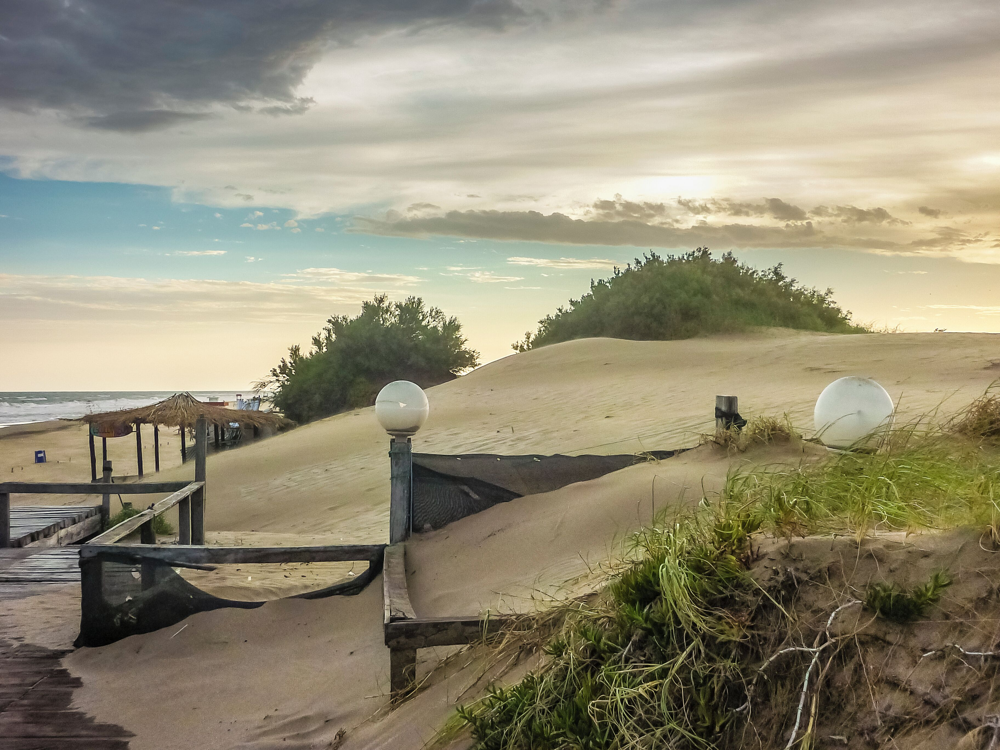
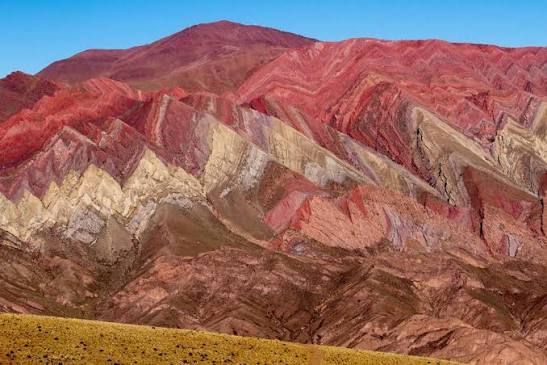

Mar del Plata
Disfrutá de la emblemática costa atlántica, sus amplias playas, gastronomía marina y vida nocturna.
Descargar Itinerario
Disfrutá de la emblemática costa atlántica, sus amplias playas, gastronomía marina y vida nocturna.
Descargar Itinerario
Bosques pinos que se encuentran con el mar, ideal para el descanso, la tranquilidad y paseos al aire libre.
Descargar Itinerario
Playas de río doradas y aguas cristalinas rodeadas de sierras para disfrutar todo el verano.
Descargar Itinerario
Montañas majestuosas, lagos cristalinos y los mejores chocolates artesanales en la Patagonia.
Descargar Itinerario
Ubicada en la Quebrada de Humahuaca, destacada por sus paisajes coloridos y riqueza cultural ancestral.
Descargar Itinerario
Aldea de montaña rodeada por el Parque Nacional Lanín, perfecta para senderismo y naturaleza.
Descargar ItinerarioSomos un equipo passionado por el turismo local y el desarrollo informático. Nos dedicamos a compilar los mejores itinerarios de viaje para que puedas planificar tus vacaciones sin complicaciones.